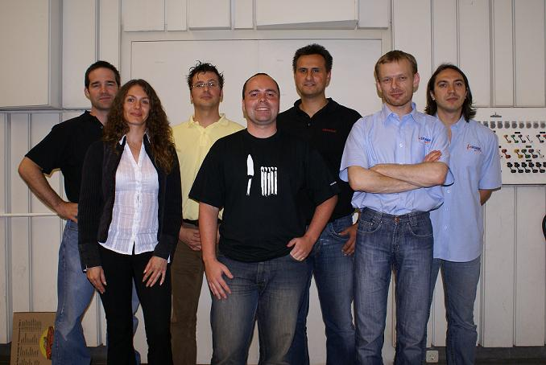

Java and Developers are Winners of IDE Shootout
July 12, 2007
On a recent July evening in Cologne, Germany, more than 70 developers
gathered to witness an unprecedented event: four rival IDEs—NetBeans,
Eclipse, Oracle and JetBrains—together on one stage. The IDE shootout,
the first of its kind, was hosted by JUG Cologne.
Representatives from each IDE were given 30 minutes to make a
presentation about the merits of their product. Roman Strobl, the first
evangelist to take the stage, spoke on behalf of NetBeans.
Strobl launched his talk with an attention-grabbing demo of the
platform-based application blueMarine,
a digital photo management
system built on the NetBeans Platform by developer Fabrizio Giudici.
Using the integration of blueMarine
and NASA's World
Wind Component to
show 3D images of the Alps and Cologne, Strobl explained that creating
similar applications was possible by reusing
existing Swing components.
The NetBeans segment continued with quick overviews of the top five
features of the IDE: Matisse, Profiler, Java EE 5, Mobility and Ruby. A
demo of Matisse highlighted its support for databinding and Swing
application framework, while the NetBeans Profiler effectively zeroed
in on a memory leak introduced into an application. Strobl was also
able to give the audience a preview of improvements to the NetBeans 6.0
Editor with a look at some of its intelligent editing features.

IDE
Evangelists at JUG Cologne IDE Shootout. From left to
right: Wayne
Beaton (Eclipse), Ann Oreshnikova
(JetBrains),
Michael Hüttermann
(JUGC/host), Roman Strobl (NetBeans), Frank Nimphius (Oracle),
Maxim
Shafirov (JetBrains), Mike Aizatsky (JetBrains)
Wayne Beaton and Frank Nimphius proceeded Strobl with presentations for
Eclipse and Oracle, respectively; The St. Petersburg team of Maxim
Shafirov, Mike Aizatsky, and Ann Oreshnikova, speaking for JetBrains,
were the final
presenters. The individual IDE demos were
followed by an hour-long discussion between evangelists and audience
members.
As
planned by event moderator and organizer, JUG Cologne leader
Michael
Hutterman, there was no declared winner among the IDEs. In a
post-event report, Hutterman noted that the event achieved its goal—a
non-competitive discussion among the top IDEs.
The clear winner, he wrote, was the Java community.
Read More About the Shootout
Photos from the Shootout
“JUG
Cologne - IDE Shootout” (Roman
Strobl, NetBeans)
“IDE Shootout: Roundup” (Michael Hutterman, JUG Cologne)
“Cologne
JUG IDE Shootout” (Ann
Oreshnikova, IntelliJ IDEA)
“JUG
Cologne: IDE Bashing - And the Winner is ….” (Frank Nimphius,
Oracle)
“IDE
Shootout: Evangelists Duke it out at Cologne JUG” (Kirk
Pepperdine, TheServerSide.com)